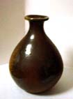 |
ほがひとは、ほぐこと、祝いのことです | 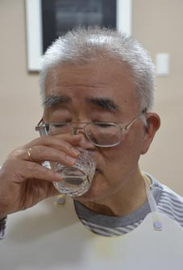 |
酒を呑んで祝いましょう |
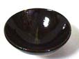 |
|
|
一日一合の酒ならば、HDL善玉コレステロールが増えるので、呑んでもよいとお許しがでたのはうれしかったものです。彼の日から数えてすでにそうとうHDLが増えた頃です。
2合にするわけにもいかないので、その分何か書いて、気を紛れさそうという、はかない試みというべきでしょうか。
『李白・月下獨酌』 2008/3/19
でんでん虫の七十一歳の誕生日は、出雲杜氏が山田錦を三分の一に磨き上げて作った大吟
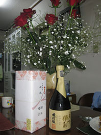
醸、李白の月下獨酌で祝いました。火曜日に飲む半合と木曜日に飲む半合のお酒を水曜日に半合二つ飲んで、ほどよい酔いを味わいました。純米ではありませんが李白の最高級のお酒で、さすがと思わされました。
名月の夜、花の近くでひとり心ゆくまで酒を飲んで、歓を尽くした得意の心境を歌い上げた、酒仙「李白」の名作です。
「月下獨酌」
花間一坪酒 獨酌夢相親 挙杯邀明月対影成三人 月既不解飲 影徒随我身
暫伴月将影 行楽須及春 我歌月徘徊
我舞影零乱 醒時同交歓 酔後各分散
永結無情遊 相期睨雲漢『八海山』 2008/5/9
八海山は銘酒中の銘酒ですが、純米大吟醸となるとすでにまぼろし化していて、でんでん虫ごときに手の届く酒ではありません。知人から八海山の一升瓶を頂いて、これは久し振りに燗をして酒を飲めると嬉しくなります。家内は「めんどくさい」などと言って、孫の凜花に「めんどくさい」という言葉を教えたことを後で後悔することになるのですが、ともかく私はぬる燗のおいしい八海山を賞味しました。ほんのり甘くてまことに日本酒らしい日本酒です。半合で顔がほてって、「白玉の歯に染みとおる夏の夜は酒は一人で飲むべかりけり」とか「考えて飲み始めたる一合の二合の酒の夏の夕暮れ」などと日本酒の歌を思い出したのは、やはり日本酒は燗をして飲むのが正しいのでしょう。八海山を一升瓶で贈ってくださった知人に深く感謝したのでした。有り難うございました。
『隔日半合』 2008/4/18
主治医の先生から、「隔日半合ならお酒を飲んでもいいですよ」と言われて、それ以後、一合は飲めない嘘のような締め付けの酒を味わっていますが、おかげさまでなんだか不思議ないいことがいろいろあるのです。
出入りのO酒店のご主人が、純米大吟醸「鵬」の本生を十二年間自分の蔵に寝せていたものを、私の誕生日に封を切って届けて下さり、「次は二十年目に飲みましょう」と言って下さったこと。
昨日、松山の知人から、全国日本酒コンクール純米大吟醸部門、全国第一位受賞「酒仙栄光・松山三井」と、新宗連のある偉い人が「愛媛の酒ではこれが一番」と折り紙をつけたという「超辛口・小富士」の二本が届きました。昨日は木曜日で隔日半合の酒が飲める日でしたから、早速全国第一位のお酒を味わってみました。純米大吟醸を十二年間寝せた酒は、これが日本酒だという味がしましたが、全国第一位受賞のお酒は、十二年間寝せたわけではないのに、日本一という味がするから面白いと思いました。
いつの間にか、半合の酒で顔が赤くなって酔っぱらってしまう体質になっていることは、なんといっても嬉しいことです。今日は病院の診察日で、主治医の先生に、「隔日半合のご指導をいただいてから不思議なことがいっぱいあるのですよ。世にも珍しい「日本酒度プラス12」などというお酒を、まだ封をしたまま、全国第一位の純米大吟醸を飲んだりしています。一日半合で充分酔える体質になってしまったので、とても便利です。アルコールを沢山飲む必要なんか、人間の身体には全くないのですね」などと、お礼を言ってきました。しかも血圧は128と78で、高血圧とはとっくにおさらばしているのでした。隔日半合様々です。有り難うございました。
『古希誕生日後夜祭』 2008/3/21
長女が企画した私の古希を祝う会は、前夜祭、当日、後夜祭の三部構成で、昨夜はその後夜祭がありました。長男と次男は「酒が出るなら電車で行く」と自動車を置いてきました。開始時間の五分前に、O酒店のご主人が「生もと純米大吟醸大七」と「梅の宿純米大吟醸」のお酒を届けてくださり、ついでに「これは私からです」ともう一本下さいました。これには手紙がついていて、純米大吟醸「鵬本生」を十二年間寝かせたものを古希の祝いとしてくださった物でした。お手紙はご許可をいただきましたので紹介します。
鈴木先生、「古希」おめでとうございます。このお酒は鳥取県の「諏訪泉」の「純米大吟醸鵬本生」です。醸造年月日は平成八年二月に上槽されたお酒です。当店で約十二年間冷蔵庫にて熟成させました。先生にお飲み頂きたく、思い切って開けて味を確認させていただきましたところ、古酒独特の風味が若干感じられるものの、キメの細かい熟成味が感じられ、まだ熟成が足りない、まだまだ味が良くなると感じました。鈴木先生、とりあえず十二年物を一度ご賞味下さい(冷やしすぎず常温に近い温度で…)。当店にこのお酒は数本あります。このまま熟成させ、次回は鈴木先生の八十才(傘寿)時にまた封を切りたいと思いますので、その時にもお酒を飲めるように、お身体にお気をつけて下さい。乱文乱筆をお許し下さい。
でんでん虫は、その達筆にも驚きましたが、お酒は見事な出来で、生まれて初めてこんなお酒を飲みました。それはそうでしょう。白吟を三年寝せたら黒吟と言われて、二万円前後で売買されることは知っています。十二年間も熟成したら、これは化け物のようなお酒になるのです。コクがあって、喉の奥で香りが感じられ、古酒独特の柔らかさが身上です。
長男は一口飲んで、「すごい切れ味だ」と呟きました。お手紙にあるように私は八十まで生きて、傘寿の誕生日に二十二年物の鵬を飲まなければなりません。そのためには刻一刻をていねいに生きなければならないと思いました。孫の琴子が中耳炎ですが、祖父母の責任は責任として、母親の週に三回も病院に通って孤軍奮闘している様が偲ばれて、本当によくやっていると思いました。
でんでん虫が八十才の時は、でんでん虫も十年間修業して人の言うことを聞けるようになって、治してあげるからな、というのが私の思いでした。
酒も単なる酒ではない、と思い知りつつ、古希七十年の後夜祭は幕を閉じたのでした。有り難うございました。
『断酒解禁・その二』 2008年3月12日
断酒解禁後、香露の純米吟醸酒を買って飲んだことを書きましたところ、熊本が郷里の知人が、熊本に帰省してでんでん虫の独り言を読み、香露の酒蔵を探し当てて、香露の本店で純米吟醸酒を一本買って私に持ってきてくださいました。これは知人がわざわざ香露の本店を訪ね、旅の心を私に寄せ喜ばせてやろうと、買ってくださったたった一本残っていた純米吟醸酒ですから、富田林の酒屋で買った香露のお酒とは絶対に味が違うはずだ、と私は言ったのですが、家内は、そんなはずはない、熊本から富田林まで冷蔵庫に入ってなかった分、温められたから味は落ちこそすれ、よくなることはないと信じて、頂いてから今まで、前のお酒がなくなるまでと冷蔵庫にしまわれていました。
そして昨日、火曜日で飲める日ですから、私はやっと熊本の酒造元の香露を飲んだのです。この香露の味は、確かに普通の香露と違い、甘味があり、たった半合のお酒で顔が赤くなって、ほてるほど私を酔わしめました。「確かにうまい」と言っても家内に通じるはずはありません。その味は、舌の奥でわずかに感じられるもので、私だけのものです。それを考えてわかろうとするから、確かにうまいと言うことがわからないのです。そんなことはわからないのですから、「そうか、そうか」と言っておけば済むことを、「味が違うわけがない」と言って、頑張りましたから、病院で計った血液中のCRPの数値が、今日の診察で少し上がりました。ステロイド剤が増えたと言って落ち込んでいます。
リュウマチ性多発筋痛症の病気は、自己免疫が過敏に発動して免疫が働かなくてもよいところで働く病気ですから、細菌感染という原因がないのに、細胞を痛めつける免疫系が邪魔をしているのです。私は無駄なところに力が入っていると教えたくてなりません。家内も、私と一緒に酒を飲んで「おいしいね」と相づちをうってくれたら、わからせてあげるのになあと思います。しかしそれは、彼女の祖母が酒飲みが嫌いで、相当な縁をつけられた鏡で、叶わない夢です。
隔日半合の酒は、充分に私を酔わせ、そのあとのご飯がおいしく食べれますが、飲まない日のほうが余計なものを飲まないで済むだけ、また嬉しさがあります。隔日半合というのは、酒の飲み方としてまことに理想的な飲み方であることがわかりました。ウワバミのように飲んでおられる方々、どうぞ無駄なことは早くおやめになられますように。
『断酒解禁』 2008年2月27日
右脳を手術してから、左の脳まで脳溢血になったので、これはまことに申し訳ないと反省して断酒を宣言して飲まないできたのですが、ウーロン茶などで腹がいっぱいになると、二日酔よりも気分が悪いことも体験しましたし、先日、主治医の先生から、「お酒、飲んでいらっしゃらないのですね。少しなら飲まれてもいいのではないでしょうか。度を過ごさなければ」と言われ、「週に三日、半合でどうでしょうか」と提案されました。
でんでん虫の感激は異様なもので、早速、解禁祝いに荻野酒店に行って、熊本の酒「香露」の四合瓶を買ってきました。「香露」の純米大吟醸はまぼろしの酒ですから、まだ手に入れることができず、いつの日かと待つのを楽しみとします。主治医のK先生は、私が教校時代の教校長の慈愛を思い出させてくださいました。教校一期生十五人の中で、私一人だけ、ある日、教校長宅に招かれ、聖丘万里の春の原酒を一番大きなコップになみなみと注いでくださいました。酒の肴などという無粋なものは一切なしで、ただ純粋にコップ一杯のお酒を飲んだのが忘れられません。当時教校長の末のお子様を担任していたので、「学校の先生って不思議なものだなあ。ひろしのことを聞きたいと思うけど、鈴木君に会うとどうしても怖くて聞けなくなる」と言われたのでした。家で「鈴木君」と言うと、「お父さん、鈴木君と言ってはいけない。鈴木先生と言いなさい」と息子さんにたしなめられたということを、いかにも嬉しそうに酒の肴の話しに聞かせてくださいました。
「二百一人目の祐祖になって、祐祖の逃亡を防ぐ」と言っておられましたが、「あれは取り消す」と言って祐祖になられた時も、私だけ祝賀会に加えていただきました。息子さんの担任ということで、息子さんの心情を尊ばれたのだと思います。特別にお計らいくださったのだと思いました。
そして、私のそばに来られて耳打ちして心境を伝授して下さいました。「鈴木君、祐祖というのは、信仰の幼稚園に入園したということだよ」と言うのです。生の率直なお気持ちを聞かせていただいて忘れられません。
「香露」をゆっくりといただきながら、老校長のあれこれの思い出を懐かしみ、断酒解禁の記念としました。最近、日本酒はやっと世界の国々に肩を並べて、日本の文化と言えるにふさわしい味を復活しました。どこの蔵でも純米大吟醸なら、一応立派な銘酒ぞろいです。古希の誕生日には、一番うまい酒を飲もうと思います。息子達は駆けつけてくれるでしょうか。最近ではカップ酒の純米大吟醸も売っています。カップ酒は安酒というイメージが定着していてなかなか売れないそうですが、でんでん虫の酒量にはカップ酒の純米大吟醸がちょうどよいなあと思ったりもしています。
蛇足・「香露」という酒は、酒の元を全国に卸している有名な蔵です。協会○号という元は発売日には、この辺の酒蔵の主人が飛行機で買ってくるのだそうです。全国の大元のようなお酒ですから「香露」の純米大吟醸が幻の酒になるのも無理のないことです。
『酒を絶つの記』 2005年6月25日
この度、左脳出血をして、退院するにあたり「もう酒をやめよう」とふと思いました。でんでん虫は酒を飲み過ぎて脳溢血になったわけではありません。一日一合の酒をやめたからといって、家内が安心するわけでもありませんし、誰からも酒を止めろと言われないうちに止めるのが、もっとも素直なことに思えたのです。
酒を止めてみて、自分がいかに深く酒に災いされていたかが分かります。酒を日本文化の結晶であると独断した上で、良い酒を飲むことで日本文化を学習しているつもりだったのです。一日一合では酒に酔うことはありませんので、酔い心地がよいから酒を飲んでいたわけでもありません。酒と酒と肴の絶妙のコンビネーションを楽しんでいたのです。まったく止める必要のない酒を止めてみて、酒を止めたのは正しかったと、ここ数日で思います。
右脳出血の後で左脳出血になって、いろいろな人たちからいろいろなことを言われました。その中で一番応えたのが、息子達からの言葉です。
男の子が生まれたとき、この子達が二十歳を過ぎて共に酒を飲めるようになったらどんなにか楽しいだろうと思ったものでした。でんでん虫のお酒は、小学生のころから飲んで味覚を育てて来たものです。息子達も同然のことのように小学生から酒を飲ませました。大学生になって、一番上等の酒を正月には買って息子の帰りを待っていたものです。
その息子達から、「お父さん、小学校長の職を辞めるべきです」とか「もう身を引いたらどうですか。小学校長には他になる人はいくらでもいます。お母さんは、お父さんがいなくては生きていけないのだから、お母さんのために長生きをしてください」などです。
そして極めつけのように、今日娘から下記のようなメールをもらいました。
「お父さんへ、お父さんと神様の間に入ることは許されませんが、娘からのお願いです。
体が疲れたと少しでも感じた時はどうか無理をしないでください。お父さんの血管は大きな事件があって、きっとまだ疲れているのでしょうし、のんびりのんびり休めてあげてほしいです。きっと少しずつ元気に回復してくるんだと思います。
ご先祖の鈴木三郎重家様の周りにもこんなことを言う人がいたのでしょうか…
とにかく、血管に負担をかけないように！！徳枝」
「お父さんと神さまの間に入ることは許されませんが」というところが、神さまから生かされているという感覚が娘にははっきりあることを示しています。
脳みそのことは、度々のMRIやCT検査の結果で視覚的にはっきりと眼に映ります。そこを流れている血管に、お酒は敏感に働くことも分かります。右脳出血の後、脳血管造影の検査があって、造影剤が反応するたびに頭がかっかと熱くなった記憶があります。検査後、主治医の先生から「この検査が人類の医学的検査のうちで一番つらい検査だと言われています」と言われたものです。
いくら誰の迷惑にならぬとはいえ、「飲みたいものを飲まないで長生きしてどうするんだ」とでんでん虫は言う気持ちはありません。飲みたいものを飲まないでただ長生きしている人がいないと、例えば小学六年生の御手洗さとみさんの死が、人類に対するみしらせであることを知る人がいなくなります。
何も命を的にしなくても、例えばうちの学校で、自分の体は小さくてかわいいのであることを忘れて、泣いている体の大きい子をおんぶして、早く先生に知らせようと走って転んで腕の骨を折った子がいます。腕に巻いたギブスが固すぎて、指先の血流が悪くなって痛くなったのだそうです。
もう痛みは治っているのかもしれませんが、その子のお父さんとお母さんに、神さまはみしらせとして何を教えているかということを、誰よりもよくわかってあげるために、脳血管の働きが必要であるとするならば、やっぱり酒を止めてよかったなあと思います。
でんでん虫は今日、学園の理事会に退院後初めて出席しました。帰ってきて昼間寝たことのないでんでん虫が、いびきをかいて眠ったそうです。きっと意義の深い理事会だったからでしょう。酒を飲まないことにした頭は、今まで酒を飲んできた脳髄とは異質のものです。この異質の脳髄の中に、新しくでんでん虫の生きる意味が成長していくはずです。
『酒器一対』 2008/2/5
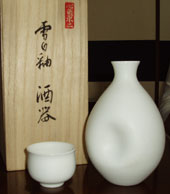
銘酒はいくら上等の酒でも飲んだらなくなります。徳利と盃はなくなるものではありません。生涯を共にして、でんでん虫の喜びも悲しみも受け取ってくれる伴りょです。陶器を愛する知人から、「思いがけず名器に出会ったので買っちゃいました」という言葉を添えて頂いたものです。第一感、神の命ずるままに私の手元に届いたと、でんでん虫は解釈しました。
見るだけではだめです。早速晩酌で竹林の中汲みの新酒を飲んでみました。純米酒の喉ごしはまろやかで、それに加えて、白磁のなめらかな手触りの徳利は、添えられた盃になみなみと注ぐとまことにこよない香りをたたえ、私の口に含まれるのでありました。「わあっ、なんというおいしさ」、これはかってない経験です。名人の至芸とはかかるものかとうならされました。
徳利は照井一玄さんの作です。この白さは日本ではこの人しか出せない白という、独特の白さです。雪の白さも、白百合の白さも、同じ白ではありますが、雪白紬の白は一切の艶を押さえて、純白の印象そのものです。貧乏人はすぐ金のことを言うと言いますから、一応値段をつけると、まあざっと五十万円というところでしょうか。
昨日まで使っていた備前焼の徳利は、倉敷の備前焼水田で買った三万円の徳利です。これはこれで備前焼らしい焼きで、伊勢崎満さんの作、徳利は備前と言われる備前焼の名器です。「今までご苦労さん」と感謝して、しばらく疲れを休めてもらうことにします。毎晩雪白紬の手の感触を楽しめると思うと、生きる張り合いが倍増するから不思議です。盃はふたつあります。誰かといつか差し向かいで飲める日がくることを楽しみにしています。
『百年の孤独』 2008/1/12
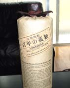
世界一のスピリッツが日本にあることは知る人ぞ知ることですが、酒の量販店には決して顔を出さず、老舗の料理屋さんのシェフ仲間に、一人から一人へと伝わり、神さまから許された人だけが飲むことの出来る銘酒です。その名も「百年の孤独」、いい名前ではありませんか。
「百年の孤独」はお湯割りなどにはせず日本酒のように盃に注いで味わいます。アルコール度が強すぎるという意見は間違いです。折角日本酒にはない四十度という純度を保っているのですから、そのままで味わいましょう。舌の先に乗せるとパッと散って次第に甘さが広がります。ウオッカにはないまろみとコク、調子に乗って飲み過ぎてはたちまち酔いますから、ほんのちょっとだけ味わって満足します。
人生もまたかくの如くありたいものと哲学的な余韻を残して、「百年の孤独」はあたかも宇宙の生命に一瞬触れる喜びを与えてくれます。養命酒を愛している知人から思いがけず頂戴して、2004年の新春を豊かに彩ってくれた銘酒でした。どなたの手にも入らないところが憎いではありませんか。選りすぐった大麦だけで蒸留した焼酎です。
『大地球・しぼりたて生原酒』 九月十一日
日本初の温泉仕込みのお酒です。地下七百メートルから組み上げた四十三度のお湯で仕込みをした酒がどういうものになるか、だれ一人確信は持てなかったはずです。それができ上がってみたら、大吟醸などとは違った無類の旨味のある酒に仕上がりました。おそらくは雑菌の入っていない水であるうえに、ミネラルが豊かであるということによるのでしょう。
酒の好みなどは個人のわがままに過ぎないと思いますが、私は今までの飲んだ酒で一番おいしい酒であると思いました。限定千本、善光寺参りに行った人でないと買えないお酒です。善光寺の余恵によって思い掛けないおいしさで、米を不必要にといでいないところもよいところです。原酒ですからアルコール度数も高く、酔い心地も満点です。大地球という名前にほれ込んで、知人が善光寺参りのおみやげに買ってきてくれました。「友あり遠方より来たるまた楽しからずや」とつぶやきながら、舌づつみをうちました『純米吟醸原酒雪小町』 十二月二十八日
福島県の蔵王の伏流水で醸された、五百万石百パーセントの原酒ですから加水
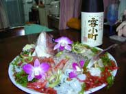
はいっさいありません。日本酒とはこういうお酒と思わされるお酒でした。山形県の「十四代」が幻の酒と言われる中にあって、それを追い抜く芳純旨口の銘酒です。十四代も幻視の酒などと独りよがりをしていますと、雪小町に追い抜かれることは確実でしよう。まことに酒の世界も一瞬の油断も許されない競争の世界なのです。
水戸の酒、天狗党なども、今年の純米生絞りなどは、過去の天狗党とはいっぺんした味わいでした。まったく油断も隙もないというべきです。これで高知の賀茂鶴が飲めたらいうことがないお正月です。
銘酒雪小町は、銘酒の名にふさわしく、ちゃんと天然鯛の活き作りを背負っておとずれました。鴨がねぎを背負って来るというようなものです。畏友S先生のお心こもった明石の大きな鯛です。でんでん虫は骨までしゃぶりつくしました。
『幻の酒』 六月十一日
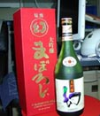
広島教会、サンルートホテル十五階の吉水で、稲村先生ご夫妻と教校一期生の会をしました。教校一期生の教育はここに開花結実するといった雰囲気で、往時を偲び、今後の布教を語り、友人達の活躍ぶりを話して懐かしいひとときでした。
酔心と賀茂の泉と幻と飲みくらべさす君の友情
稲村氏ご夫妻は殆ど飲まれないのです。でんでん虫が一人で飲みました。幻は別格ですが、酔心と賀茂泉は純米大吟醸、日本酒の味としてはここに極まるという味でした。
日本酒の肴はやはり刺し身が一番よいようです。アジとマグロとサザエの刺し身は土地のお酒にぴたりとあって、絶妙の相対一如の神業を醸し出しました。これで明日の講演がうまくいかないはずはありません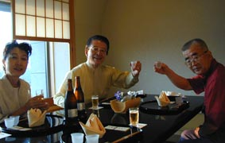
。
よきかな友情、教校一期生は、「この中で誰か一人が悟ったらいいんだ。一人が悟れば全員同じ境地になる、それが結びというものだ」と教えられて育ちました。今宵旨酒にほどよい酔いを感じつつ、やはり広島ですから、六十万と言われる原爆犠牲者の方々の御霊に祈りを捧げて休みました。
犠牲者の六十万の御みたまこもれる木々の葉の緑かも
『気仙沼の鰹のたたき』 十月二十九日
尼崎の長男宅に、気仙沼の鰹のたたきが届いたという話を聞きました。気仙沼の鰹は、鰹節か缶詰と相場が決まっていると思っていましたのに、久しく帰らないと、土佐の高知の真似でもあるまいに、鰹のたたきが名物となっているのは意外でした。
折しも今日は、昨日帰本された知人から、水戸の天狗党を頂いたばかりです。冷蔵庫ですっかり冷えています。気仙沼の鰹のたたきは、行き先を間違えたものと思われます。天狗党は幕末の水戸の、尊王攘夷派の過激派の名前ですが、今では日本酒銘酒鑑評会で金賞を受賞する常連の銘酒です。
でんでん虫が学んだ気仙沼高校の当時の校長は、福田韓次郎先生で、偉い先生でした。若いとき、お母さんと酒を飲まんという約束をして、以後生涯一滴も酒を口にせず、他界された意志の堅さが未だに、でんでん虫の心に残っている先生です。
久し振りに校長先生のお顔を思い浮かべながら、天狗党を飲もうと思いましたが、本来、肴となるべき気仙沼のかつおのたたきが、行き先を間違えて尼崎に行ったのは残念です。
知人は「水戸の母に勧められて」と言っていました。水戸の母といえば、でんでん虫の大学時代の教会長夫人です。相応しい肴が届くまでは口に出来ないお酒ですから、又冷蔵庫にしまうことにして、鰹のたたきかサンマが届くのを待つことにします。
『黒龍』 六月二十四日
アメリカから帰った日に、「父の日のプレゼントです」ということで、長男の嫁から、銘酒中の銘酒「黒龍」が届きました。インターネットを駆使して探して贈ってくれたものです。
去年、長男夫婦をともなって河内長野の「喜一」という料亭で食事をしたことがありました。ここは料理の味も一流でしたが、酒の値段も一流で、黒龍は一合四千円でした。でんでん虫が「どうせ飲むなら一番よいのを」と選んだら、長男が「僕は一合四千円の酒など飲みません」と固辞して、そのためにでんでん虫も飲み損なった酒です。
その日、その時にその酒の名を覚えていてくれて、ずっと探してくれたお酒です。もう忘れた頃の今日まで、じっとその日を待っていて贈ってくれたお酒、福井県の純米大吟醸、黒龍、限定酒に栄えあれ。
背中がぞっとする銘酒です。一滴、一滴に味があり、肴は何もいりません。毎晩飲みたいが、次に飲めるのは来年の五月とか、それだからこそ、おいしい酒なのでしょう。
『井筒屋伊兵衛』 五月十八日
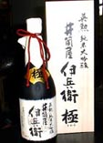
京都伏見の銘酒と言えば「井筒屋伊兵衛」、その栄勲、純米大吟醸、極（きわみ）です。まことに極にふさわしい辛口のよい酒でした。
「事故死を免れて」という独り言は、乱暴で不適切な文章でしたが、それ故にこそ、こういう銘酒がお見舞いとして届いたのです。実にうまい酒でした、というほかに何も言うことはないのです。
一口飲んでぞっとするようなお酒は一年に一度か二度しか出会わないものですが、井筒屋伊兵衛は杯一杯の酒を二度にも三度にも分けて飲みながら、のどごしの吟醸香をどこまでも深く味わい尽くすべきお酒でした。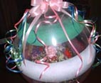
母の日のプレゼント、風船に包まれたカーネーションは、箱からそっと出して置いた途端に風船が割れてしまいました。風船の中に治められている花鉢を鑑賞する間もなかったので、もう一度風船の中におさめられた花を見たいものだと思っていましたら、今朝、花屋さんがもう一度届けてくれました。親孝行の心が神様に届いたあかしというべきです。
このまま二日間ほど鑑賞出来るのだそうです。今回は中にピンクのカーネーションの花鉢が入っています。風船を割る時は、恐い人は耳をふさいでおいてください、と書いてあります。その時が楽しみです。
『麻雀』 平成12年 (2000年) 1月2日
昨夜、年始の挨拶に立ち寄った長男夫妻とでんでん虫夫婦で、数年ぶりの麻雀をしました。嫁の晴子さんが「私、去年の私と違いますよ」と言って座りましたが、次々と長男に振り込ませ続けて、見事な一人勝ちをおさめました。
でんでん虫は、初代校長の原田種臣先生が会うたびに「鈴木さん、あなた、麻雀をしますか。麻雀をしなさい、麻雀を」とか、「鈴木さん、あなた、囲碁をしなさい、囲碁を」などとアドバイスして下さったにもかかわらず、麻雀も囲碁も見向きもしない人生を選択しましたので、半身不随になる前に目覚めた囲碁だけはものにしたものの、麻雀だけは未だに不思議なゲームです。
「リーチ」と言っておいて、「いや、さっきのリーチは取り消します」などと言いたくなる始末で、筋などというものの存在は未だに認められません。ああいうものは、子供の頃にきちんと身につけておかなければならないのです。種臣先生ではないけれど、子供たちは勉強などする暇があったら、正月は親と一緒に麻雀をこそするべきです。
、逆回りをしていた我が家の麻雀が、いつの間にか又その逆回りで正常化した頃、携帯に電話があって、先天性心臓疾患の子供の手術が決まったとかで「今夜は徹夜です」と言い残して、息子夫婦は帰っていきました。
綾菊大吟醸の１９８７年もの、１０年古酒を用意して待っていましたのに、たちまちに酔いも覚めたことでしょう。医者の仕事は、正月はないことを毎年見せつけられますにつけ、休む間のない生活こそが本当の幸福な生活なのだと思い知らされます。
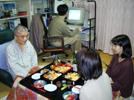
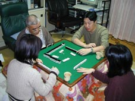
『結婚記念日』1999/2/1
「ただいま」と玄関に入ると、肉の焼けるにおいがしました。「あれ、めずらしいな」とでんでん虫、台所から出てきた家内が「一応、結婚記念日ですからね」と言います。しまった、百パーセント忘れていました。三日前に「忘れるなよ、何か用意しろよ」と自分に言い聞かせていたのに、完全に頭になかったのです。二月一日組は奥さん孝行が多いから、かかるドジを踏んだのはでんでん虫くらいのものでしょう。脳溢血で半身不随になると、家内に対する感謝は並のものではなくなります。その意味では、全人類は脳溢血になって半身不随になるべきだというでんでん虫の思いは、むなしく萎えなければなりません。それにしても、有り難い妻と結婚させて頂いたのであったと、神様に感謝すべき日を、でんでん虫はもったいないことをしてしまいました。
肉に合わせてお酒が買ってありました。「アンフィルタード酒、梅の宿」です。外人の蔵人の命名です。この酒、純米で酒蔵から絞り出されたばかりの味がする極上の酒ですが、値段は三千六百円ほど。梅の宿のご主人とおぎの酒店のご主人の友情があってこその特別のお酒です。一万円の値打ちがあるところ三千六百円は安いものです。市内のおぎの酒店で今なら手に入ります。よき酒を買ってくれた家内は、届けてくれたおぎの酒店のご主人に、私の飲み残しの酒を「これは滅多に手に入らないめずらしいお酒でしょうから」と差し上げたそうです。「欽明屯倉の雫」というお酒です。酒屋のご主人にお酒をあげるなんて、ずいぶん度胸のいいことをするものだと感服して、改めて、よき女房小女房…と思います。
|
脳の外科手術を終わって、集中治療室から大部屋に移った日の朝、でんでん虫の耳に聞こえてきたのは古今亭志ん生の落語でした。志ん生の何とも言えない話術で、話の枕を繰り返し聞くことになったのですが、それが「朝酒は嬶を質に置いて飲め」という科白で始まるのでした。語尾のはっきりしたものをわかりきった口調で「朝酒は嬶を質に置いて飲め」と言われますと、朝酒は命より大切なカカアを質に置いても無理をして飲まねばならないほどにおいしいものだ、というように聞こえます。全人類は何はさておき、朝酒を飲まなければならない、よし、己もぜひ一日も早く、と思いつつ、点滴の終わるのを待ちながら、ぼんやりした頭に「朝酒は‥‥‥」といってきかせたものでした。 ところで正気になって、手術をして下さった院長先生に「退院したら、酒を飲んでもいいですか？」とたずねますと、言下に「とんでもありません」というお答えです。すがりつくように「利き酒だけ、一杯だけならいいでしょう？」と重ねて質問しますと「私が脳溢血になったなら、飲みません」とそれは、それはこわい声でおっしゃるのです。やっとの思いで退院してからも、家内を質に入れてでも金を工面して飲むべき朝酒をまだ飲んでいないと、毎日後悔しながら暮らしていました。 そして、とうとう今年の正月に、家内がまだ布団の中にいると確かめてから、朝酒を断行したのです。台所で音をたてないようにぐいのみに純米大吟醸を注ぎ「さあ飲むぞ」と胸ときめかせて、一瞬、寝ているはずの家内が飛び出してきて、あわれ、朝酒は台所の流しの中に捨て去られました。そして、ああむなしい、と思った時、でんでん虫は志ん生の話芸のまさに名人芸であることに気付きました。それこそは青天の霹靂というべきものだったのです。 「朝酒は嬶を質に置いて飲め」と言うのは、決して朝酒はうまいものだという話ではなかったのです。「朝酒というのは、嬶にとってはとてもとてもたまらなく不愉快なもので我慢できないものだ、必ずや取り上げられて邪魔されて飲めなくなるので、邪魔者は質屋に預けて留守の間に飲まないと飲めないよ」ということなのです。朝酒などうまいはずがありません。手術後の脳裏にあれほど人生の至福として聞こえた朝酒は、いったいどこへ行けばいいのでしょうか。でんでん虫はいつの間にか、朝酒だけは飲むまいと心が変化している自分を発見します。そういえば、最近は志ん生の落語を聞く機会も滅多にないのです。（9.11/26） |
|
『木の葉天目にまつわる話』 「また天皇、長谷（はつせ）の百枝（ももえ）槻の下に坐しまして、豊楽（とよのあかり）したまひし時、伊勢の國の三重のうねべ、大御盞（おおみうき）を指擧（ささ）げて獻りき。ここにその百枝槻の葉、落ちて大御盞に浮かびき。そのうねべ、落ち葉の盞（うき）に浮かべるを知らずて、なほ大御酒（き）を獻りき。天皇その盞に浮かべる葉を看行（みそな）はして、そのうねべを打ち伏せ、刀（たち）をその頸にさし充てて、斬らむとしたまひし時、そのうねべ、天皇に白して日ひけらく、「吾（あ）が身をな殺したまひそ。白すべき事あり。」といひて、すなはち歌ひけらく、」（以下略） |
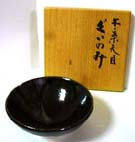 |
ともかく、うねべは命を助けて頂くことになるのです。古事記にそんなことが書いてあることを思いだしながら、木の葉天目で本当のお酒を飲むのです。めでたし、めでたし （11/27） |
|
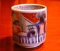